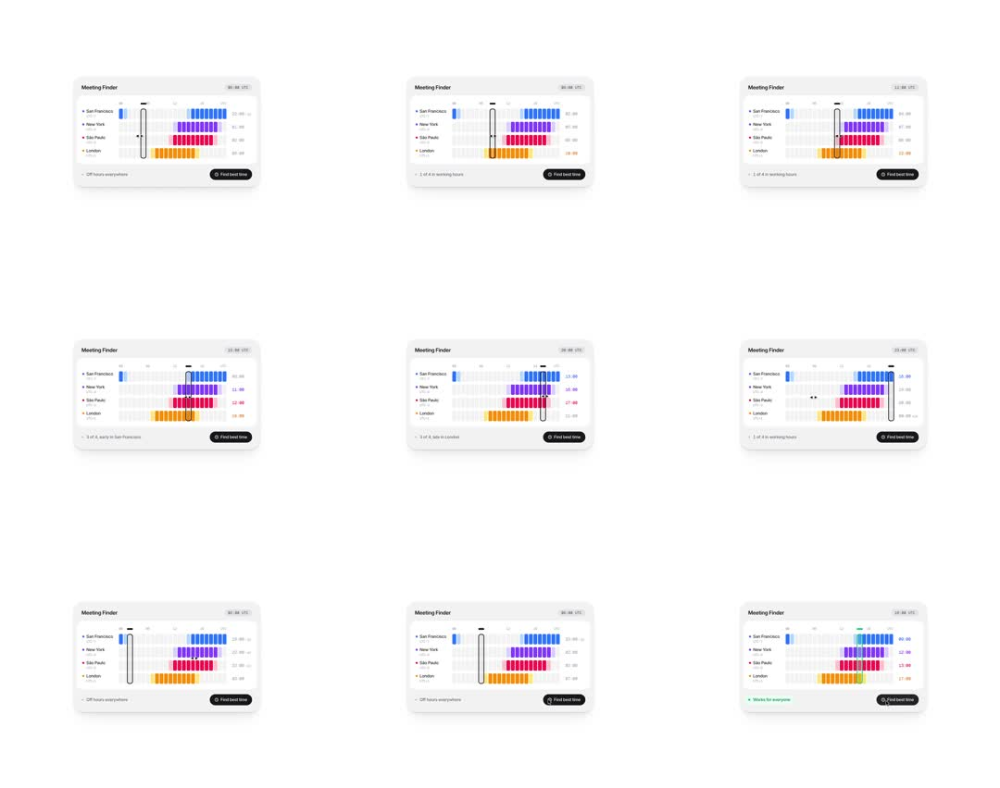

Media
Frame-by-frame

0-20%
Card 'Meeting Finder': rows of rounded hour-blocks per city, blocks colored by working-hours quality (blue, purple, magenta/pink, yellow) over a faint grey grid; scrubber parked mid-morning; status 'Off hours everywhere'; local times listed right.
20-45%
Scrubber drags right: blocks under it lift/highlight with a white ring; per-city local time labels update; status flips to '1 of 4 in working hours'.
45-65%
Scrubber near evening: '3 of 4, late in London'; block colors under the line brighten; a small tooltip clock rides the scrubber top.
65-85%
Sweep back left past midnight: 'Off hours everywhere' again; scrubber handle is a slim white rounded bar with a grip notch.
85-100%
'Find best time' clicked: scrubber animates by itself to the max-overlap slot, blocks for all four cities light, status turns green: 'Works for everyone'.